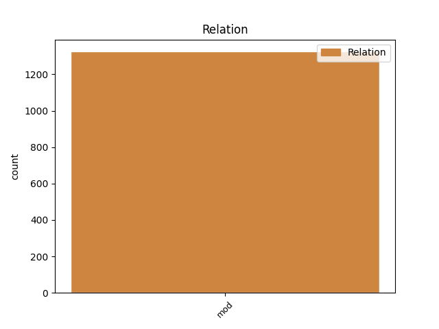
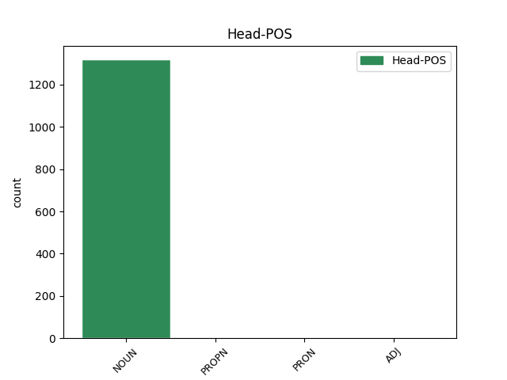
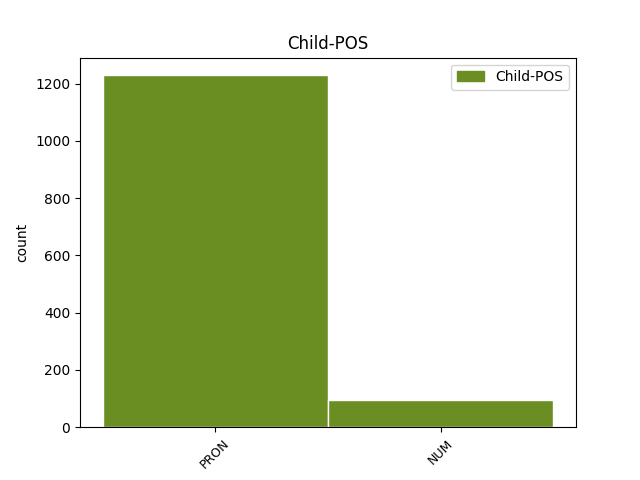

Distribution of features within this leaf



Agreement Rules sorted by frequency.
- When the dependent token is the modifer(mod) of the head token, and the head token is NOUN and the dependent token is PRON.
1 Vi _ _ _ _ 0 _ _ _
2 er _ _ _ _ 0 _ _ _
3 stolte _ _ _ _ 0 _ _ _
4 av _ _ _ _ 0 _ _ _
5 landet land NOUN _ Definite=Def|Gender=Neut|Number=Sing 0 _ _ _
6 vårt vår PRON _ Gender=Neut|Number=Sing|Poss=Yes|PronType=Prs 5 mod _ _
7 , _ _ _ _ 0 _ _ _
8 og _ _ _ _ 0 _ _ _
9 jeg _ _ _ _ 0 _ _ _
10 vil _ _ _ _ 0 _ _ _
11 kjempe _ _ _ _ 0 _ _ _
12 for _ _ _ _ 0 _ _ _
13 at _ _ _ _ 0 _ _ _
14 ikke _ _ _ _ 0 _ _ _
15 så _ _ _ _ 0 _ _ _
16 mange _ _ _ _ 0 _ _ _
17 flytter _ _ _ _ 0 _ _ _
18 herfra _ _ _ _ 0 _ _ _
19 , _ _ _ _ 0 _ _ _
20 sier _ _ _ _ 0 _ _ _
21 Sunneva _ _ _ _ 0 _ _ _
22 . _ _ _ _ 0 _ _ _
1 Turen _ _ _ _ 0 _ _ _
2 tar _ _ _ _ 0 _ _ _
3 rundt _ _ _ _ 0 _ _ _
4 fem _ _ _ _ 0 _ _ _
5 minutter _ _ _ _ 0 _ _ _
6 og _ _ _ _ 0 _ _ _
7 kostet _ _ _ _ 0 _ _ _
8 85 _ _ _ _ 0 _ _ _
9 kroner _ _ _ _ 0 _ _ _
10 én én NUM _ Gender=Masc|Number=Sing|NumType=Card 11 mod _ _
11 vei vei NOUN _ Definite=Ind|Gender=Masc|Number=Sing 0 _ _ _
12 . _ _ _ _ 0 _ _ _
1 Det det PRON _ Gender=Neut|Number=Sing|Person=3|PronType=Prs 5 mod _ _
2 som _ _ _ _ 0 _ _ _
3 skjer _ _ _ _ 0 _ _ _
4 , _ _ _ _ 0 _ _ _
5 det det PRON _ Gender=Neut|Number=Sing|Person=3|PronType=Prs 0 _ _ _
6 skjer _ _ _ _ 0 _ _ _
7 . _ _ _ _ 0 _ _ _
1 Det _ _ _ _ 0 _ _ _
2 er _ _ _ _ 0 _ _ _
3 her _ _ _ _ 0 _ _ _
4 møtet _ _ _ _ 0 _ _ _
5 mellom _ _ _ _ 0 _ _ _
6 vår vår PRON _ Gender=Masc|Number=Sing|Poss=Yes|PronType=Prs 7 mod _ _
7 Richard Richard PROPN _ Gender=Masc 0 _ _ _
8 Gere _ _ _ _ 0 _ _ _
9 og _ _ _ _ 0 _ _ _
10 den _ _ _ _ 0 _ _ _
11 prostituerte _ _ _ _ 0 _ _ _
12 skjer _ _ _ _ 0 _ _ _
13 . _ _ _ _ 0 _ _ _
1 Han _ _ _ _ 0 _ _ _
2 pådro _ _ _ _ 0 _ _ _
3 seg _ _ _ _ 0 _ _ _
4 sitt sin PRON _ Gender=Neut|Number=Sing|Poss=Yes|PronType=Prs 7 mod _ _
5 tredje _ _ _ _ 0 _ _ _
6 gule _ _ _ _ 0 _ _ _
7 kort kort ADJ _ Definite=Ind|Degree=Pos|Gender=Neut|Number=Sing 0 _ _ _
8 for _ _ _ _ 0 _ _ _
9 sesongen _ _ _ _ 0 _ _ _
10 . _ _ _ _ 0 _ _ _
Disagree Examples:
1 Hans hans PRON _ Gender=Masc|Number=Sing|Poss=Yes|PronType=Prs 2 mod _ _
2 ordbruk ordbruk NOUN _ Definite=Ind|Gender=Neut|Number=Sing 0 _ _ _
3 i _ _ _ _ 0 _ _ _
4 tiltredelsestalen _ _ _ _ 0 _ _ _
5 var _ _ _ _ 0 _ _ _
6 nok _ _ _ _ 0 _ _ _
7 en _ _ _ _ 0 _ _ _
8 bekreftelse _ _ _ _ 0 _ _ _
9 . _ _ _ _ 0 _ _ _
1 I _ _ _ _ 0 _ _ _
2 snart _ _ _ _ 0 _ _ _
3 20 _ _ _ _ 0 _ _ _
4 år _ _ _ _ 0 _ _ _
5 har _ _ _ _ 0 _ _ _
6 han _ _ _ _ 0 _ _ _
7 gjort _ _ _ _ 0 _ _ _
8 sitt _ _ _ _ 0 _ _ _
9 ytterste _ _ _ _ 0 _ _ _
10 for _ _ _ _ 0 _ _ _
11 å _ _ _ _ 0 _ _ _
12 forsvare _ _ _ _ 0 _ _ _
13 vårt _ _ _ _ 0 _ _ _
14 privatliv _ _ _ _ 0 _ _ _
15 , _ _ _ _ 0 _ _ _
16 vår vår PRON _ Gender=Fem|Number=Sing|Poss=Yes|PronType=Prs 17 mod _ _
17 rett rett NOUN _ Definite=Ind|Gender=Masc|Number=Sing 0 _ _ _
18 til _ _ _ _ 0 _ _ _
19 å _ _ _ _ 0 _ _ _
20 holde _ _ _ _ 0 _ _ _
21 noe _ _ _ _ 0 _ _ _
22 for _ _ _ _ 0 _ _ _
23 oss _ _ _ _ 0 _ _ _
24 selv _ _ _ _ 0 _ _ _
25 , _ _ _ _ 0 _ _ _
26 vår _ _ _ _ 0 _ _ _
27 rett _ _ _ _ 0 _ _ _
28 til _ _ _ _ 0 _ _ _
29 personlig _ _ _ _ 0 _ _ _
30 frihet _ _ _ _ 0 _ _ _
31 . _ _ _ _ 0 _ _ _
1 - _ _ _ _ 0 _ _ _
2 Jeg _ _ _ _ 0 _ _ _
3 tror _ _ _ _ 0 _ _ _
4 dette _ _ _ _ 0 _ _ _
5 er _ _ _ _ 0 _ _ _
6 gode _ _ _ _ 0 _ _ _
7 mennesker _ _ _ _ 0 _ _ _
8 som _ _ _ _ 0 _ _ _
9 har _ _ _ _ 0 _ _ _
10 snublet _ _ _ _ 0 _ _ _
11 i _ _ _ _ 0 _ _ _
12 sin sin PRON _ Gender=Masc|Number=Sing|Poss=Yes|PronType=Prs 14 mod _ _
13 egne _ _ _ _ 0 _ _ _
14 skolisser skolisse NOUN _ Definite=Ind|Gender=Fem|Number=Plur 0 _ _ _
15 . _ _ _ _ 0 _ _ _
1 Etter _ _ _ _ 0 _ _ _
2 at _ _ _ _ 0 _ _ _
3 en _ _ _ _ 0 _ _ _
4 barnefar _ _ _ _ 0 _ _ _
5 sa _ _ _ _ 0 _ _ _
6 opp _ _ _ _ 0 _ _ _
7 kontrakten _ _ _ _ 0 _ _ _
8 og _ _ _ _ 0 _ _ _
9 holdt _ _ _ _ 0 _ _ _
10 sin sin PRON _ Gender=Masc|Number=Sing|Poss=Yes|PronType=Prs 14 mod _ _
11 ett _ _ _ _ 0 _ _ _
12 år _ _ _ _ 0 _ _ _
13 gamle _ _ _ _ 0 _ _ _
14 datter datter NOUN _ Definite=Ind|Gender=Fem|Number=Sing 0 _ _ _
15 borte _ _ _ _ 0 _ _ _
16 fra _ _ _ _ 0 _ _ _
17 dagmammaen _ _ _ _ 0 _ _ _
18 , _ _ _ _ 0 _ _ _
19 ble _ _ _ _ 0 _ _ _
20 han _ _ _ _ 0 _ _ _
21 oppsøkt _ _ _ _ 0 _ _ _
22 av _ _ _ _ 0 _ _ _
23 HA-medlemmer _ _ _ _ 0 _ _ _
24 hjemme _ _ _ _ 0 _ _ _
25 på _ _ _ _ 0 _ _ _
26 døren _ _ _ _ 0 _ _ _
27 med _ _ _ _ 0 _ _ _
28 krav _ _ _ _ 0 _ _ _
29 om _ _ _ _ 0 _ _ _
30 penger _ _ _ _ 0 _ _ _
31 i _ _ _ _ 0 _ _ _
32 oktober _ _ _ _ 0 _ _ _
33 2005 _ _ _ _ 0 _ _ _
34 . _ _ _ _ 0 _ _ _
1 Spencer _ _ _ _ 0 _ _ _
2 er _ _ _ _ 0 _ _ _
3 en _ _ _ _ 0 _ _ _
4 av _ _ _ _ 0 _ _ _
5 de _ _ _ _ 0 _ _ _
6 islamfiendtlige _ _ _ _ 0 _ _ _
7 ideologene _ _ _ _ 0 _ _ _
8 Anders _ _ _ _ 0 _ _ _
9 Behring _ _ _ _ 0 _ _ _
10 Breivik _ _ _ _ 0 _ _ _
11 flittig _ _ _ _ 0 _ _ _
12 refererer _ _ _ _ 0 _ _ _
13 til _ _ _ _ 0 _ _ _
14 i _ _ _ _ 0 _ _ _
15 sitt sin PRON _ Gender=Neut|Number=Sing|Poss=Yes|PronType=Prs 17 mod _ _
16 1500 _ _ _ _ 0 _ _ _
17 siders side NOUN _ Case=Gen|Definite=Ind|Gender=Fem|Number=Plur 0 _ _ _
18 lange _ _ _ _ 0 _ _ _
19 dokument _ _ _ _ 0 _ _ _
20 som _ _ _ _ 0 _ _ _
21 ble _ _ _ _ 0 _ _ _
22 spredd _ _ _ _ 0 _ _ _
23 etter _ _ _ _ 0 _ _ _
24 terrorudåden _ _ _ _ 0 _ _ _
25 22. _ _ _ _ 0 _ _ _
26 juli _ _ _ _ 0 _ _ _
27 . _ _ _ _ 0 _ _ _